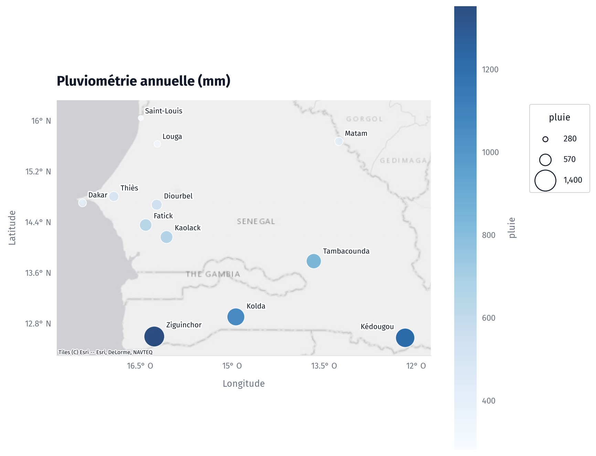
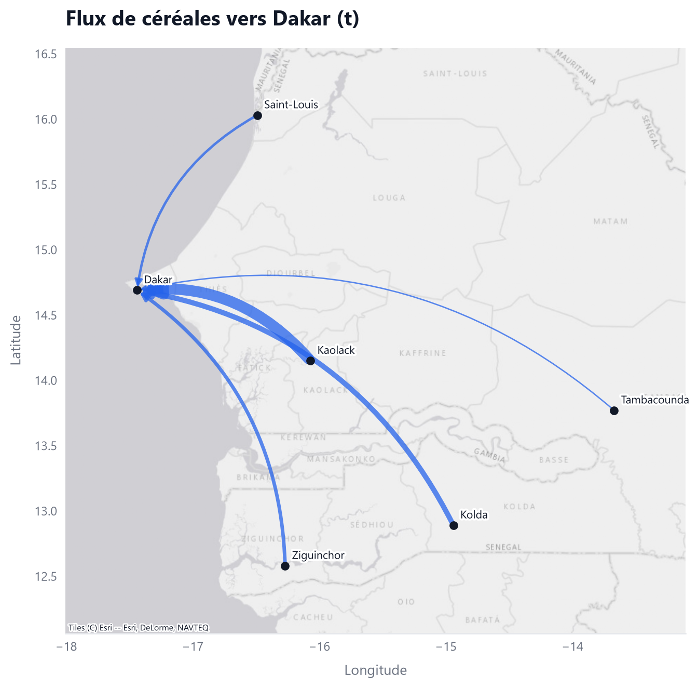
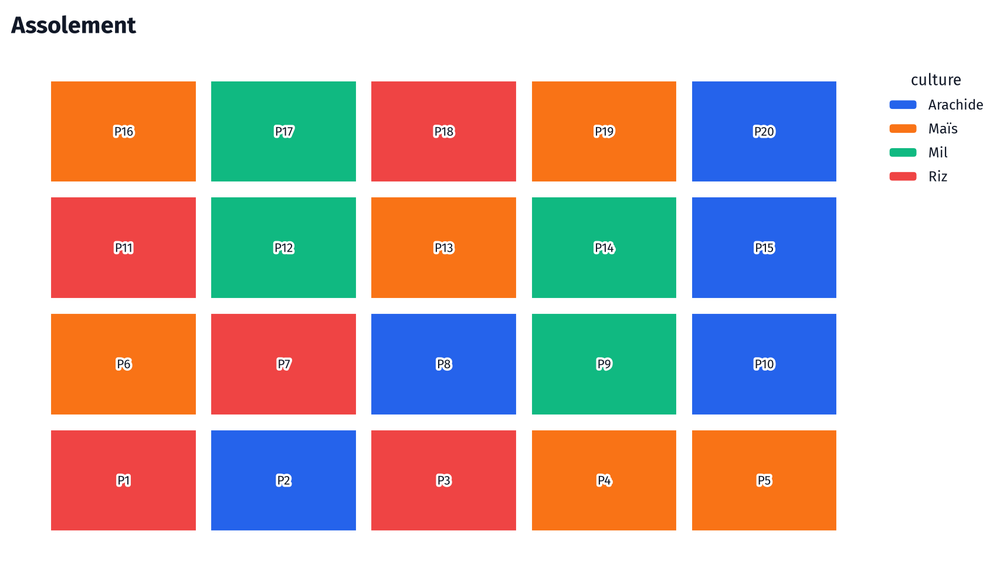
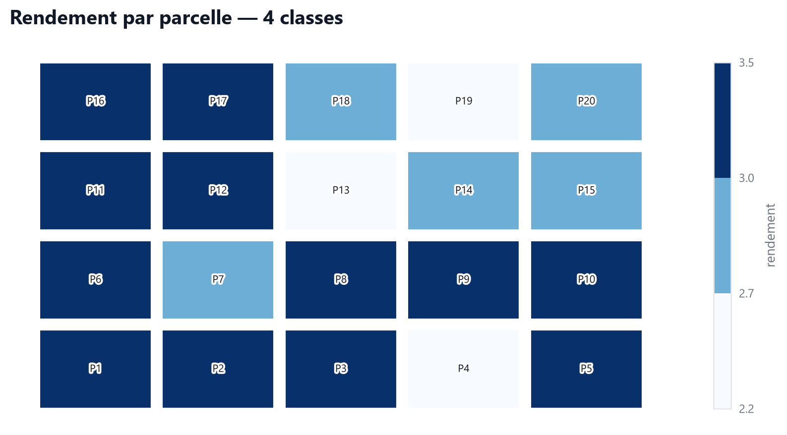
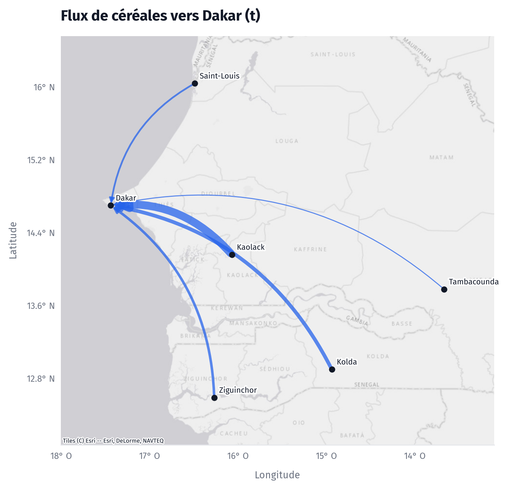
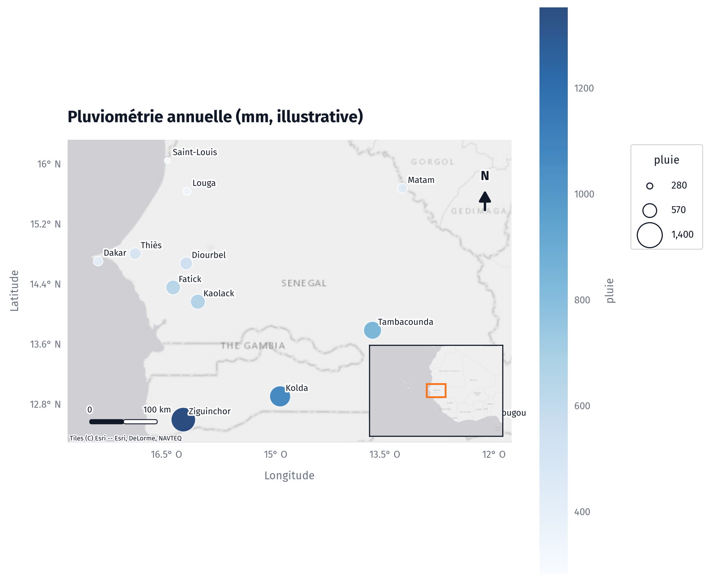

(Chart(villes, figsize=(9, 7))
.map_points('lon', 'lat', value='pluie', size='pluie', labels='ville')
.title('Pluviométrie annuelle (mm)')
.tight_layout()
.show())
Points, zones, flux, densités, isolignes et trajets, avec flèche du nord, échelle et carte de situation.
Tous les exemples utilisent le thème editorial. Retour à la galerie.
Les cartes utilisent l’option map (geopandas pour les zones, contextily pour les fonds de carte) :
Sans cette option, map_points et flow_map fonctionnent sans fond de carte. Le fond par défaut (Esri World Gray Canvas, ou l’imagerie satellite en thème sombre) ne demande pas de clé d’API ; basemap_source='Esri.WorldTopoMap' en choisit un autre. Sans réseau, la carte est tracée sans fond, avec un avertissement.
Les coordonnées des villes sont réelles ; les valeurs (pluviométrie, tonnages) sont illustratives.
map_points — Points sur une cartePoints sur une carte en longitude / latitude : colorés par une valeur ou un groupe, dimensionnés par une colonne (symboles proportionnels), nommés, sur un fond de carte.
Quand l’utiliser. Localiser des stations, parcelles, villages ou relevés et montrer une valeur par lieu (pluie, rendement, effectif).
Données attendues : un DataFrame, une ligne par lieu (coordonnées WGS84 en degrés décimaux).
| Colonne (exemple) | Type | Rôle | Exemple de valeur |
|---|---|---|---|
ville |
texte | labels (optionnel) : nom affiché |
Kaolack |
lon |
nombre | lon : longitude |
-16.07 |
lat |
nombre | lat : latitude |
14.15 |
pluie |
nombre | value / size (optionnels) : couleur, taille |
640 |
Paramètres
| Paramètre | Défaut | Description |
|---|---|---|
lon |
obligatoire | Colonne des longitudes (degrés décimaux, WGS84). |
lat |
obligatoire | Colonne des latitudes (degrés décimaux, WGS84). |
value |
None |
Colonne numérique qui colore les points (barre de couleur). |
size |
None |
Colonne numérique qui dimensionne les points (symboles proportionnels). |
group |
None |
Colonne de regroupement : une couleur (et une entrée de légende) par groupe. |
labels |
None |
Colonne des étiquettes (noms affichés). |
basemap |
True |
Ajoute un fond de carte en ligne (option map, connexion Internet). |
cmap |
None |
Palette de couleurs continue (nom matplotlib). None : celle du thème. |
sizes |
(30, 500) |
Tailles minimale et maximale des symboles (points²). |
alpha |
0.85 |
Opacité, de 0 (transparent) à 1 (opaque). |
basemap_source |
None |
Fournisseur de tuiles contextily ; None : Esri WorldGrayCanvas. |
size_legend |
True |
Ajoute la légende des tailles. |
Exemple
Des points en longitude/latitude, colorés par une valeur (value) ou un groupe (group), dimensionnés par une colonne (size), nommés (labels).

choropleth — Carte de zonesCarte choroplèthe : chaque zone d’un GeoDataFrame (région, commune, parcelle) colorée selon une colonne continue ou catégorielle.
Quand l’utiliser. Cartographier un indicateur par unité spatiale : rendement par parcelle, densité par commune, type de sol par zone.
Données attendues : un GeoDataFrame, une ligne par zone, avec une colonne geometry (polygones) ; lire un fichier avec geopandas.read_file(...).
| Colonne (exemple) | Type | Rôle | Exemple de valeur |
|---|---|---|---|
parcelle |
texte | labels (optionnel) : nom écrit dans la zone |
P07 |
rendement |
nombre ou texte | column : valeur cartographiée |
3.4 |
geometry |
géométrie (Polygon) | contour de la zone (colonne géométrique) | POLYGON ((0 0, 1 0, 1 1, 0 1, 0 0)) |
Paramètres
| Paramètre | Défaut | Description |
|---|---|---|
column |
obligatoire | Colonne à cartographier. |
labels |
None |
Colonne des étiquettes (noms affichés). |
cmap |
None |
Palette de couleurs continue (nom matplotlib). None : celle du thème. |
categorical |
None |
Force une légende catégorielle (True) ou continue (False) ; None = selon le type de la colonne. |
legend |
True |
Affiche la légende ou la barre de couleur. |
basemap |
False |
Ajoute un fond de carte en ligne (option map, connexion Internet). |
edgecolor |
None |
Couleur des contours. None : thème. |
basemap_source |
None |
Fournisseur de tuiles contextily ; None : Esri WorldGrayCanvas. |
scheme |
None |
Discrétisation d’une colonne numérique : None (continu), ‘quantiles’, ‘equal’ (intervalles égaux) ou ‘natural’ (seuils naturels de Jenks). |
k |
5 |
Nombre de classes de la discrétisation. |
Exemple
Chaque zone d’un GeoDataFrame colorée selon une colonne : continue (barre de couleur) ou catégorielle (légende). Les zones se lisent avec geopandas.read_file('zones.geojson') (GeoJSON, shapefile, GeoPackage…). Ici, un parcellaire fictif construit avec shapely :
import geopandas as gpd
from shapely.geometry import box
rng = np.random.default_rng(1)
parcelles = gpd.GeoDataFrame(
{'parcelle': [f'P{i + 1}' for i in range(20)],
'rendement': (3 + rng.normal(0, 0.6, 20)).round(1),
'culture': rng.choice(['Riz', 'Maïs', 'Mil', 'Arachide'], 20)},
geometry=[box(x * 110, y * 80, x * 110 + 100, y * 80 + 70)
for y in range(4) for x in range(5)],
crs='EPSG:32628') # coordonnées en mètres (UTM 28N)
(Chart(parcelles, figsize=(9, 5.5))
.choropleth('rendement', labels='parcelle')
.title('Rendement par parcelle (t/ha)')
.tight_layout()
.show())

Pour une colonne numérique, scheme regroupe les valeurs en k classes de couleur : 'quantiles' (même nombre de zones par classe), 'equal' (intervalles égaux) ou 'natural' (seuils naturels de Jenks, qui placent les coupures entre les groupes de valeurs). Les bornes sont dans chart.classes.
Bornes des classes : [2.2 2.7 3. 3.5]
flow_map — Carte de fluxCarte de flux : une flèche courbe de l’origine vers la destination pour chaque ligne, d’épaisseur proportionnelle au volume.
Quand l’utiliser. Échanges commerciaux, approvisionnement des marchés, migrations, déplacements de troupeaux entre lieux.
Données attendues : un DataFrame, une ligne par flux (origine → destination).
| Colonne (exemple) | Type | Rôle | Exemple de valeur |
|---|---|---|---|
ville |
texte | label_from (optionnel) : nom de l’origine |
Kaolack |
lon |
nombre | lon_from : longitude de l’origine |
-16.07 |
lat |
nombre | lat_from : latitude de l’origine |
14.15 |
lon_dakar |
nombre | lon_to : longitude de la destination |
-17.44 |
lat_dakar |
nombre | lat_to : latitude de la destination |
14.69 |
tonnes |
nombre | weight (optionnel) : épaisseur de la flèche |
1200 |
Paramètres
| Paramètre | Défaut | Description |
|---|---|---|
lon_from |
obligatoire | Colonne des longitudes d’origine. |
lat_from |
obligatoire | Colonne des latitudes d’origine. |
lon_to |
obligatoire | Colonne des longitudes de destination. |
lat_to |
obligatoire | Colonne des latitudes de destination. |
weight |
None |
Colonne du volume du flux (épaisseur des flèches). |
label_from |
None |
Colonne des noms d’origine. |
label_to |
None |
Colonne des noms de destination. |
basemap |
True |
Ajoute un fond de carte en ligne (option map, connexion Internet). |
curvature |
0.25 |
Courbure des flèches (0 = droites). |
color |
None |
Couleur unique (nom, hexadécimal). None : couleur du thème. |
max_width |
8 |
Épaisseur de la flèche la plus grosse. |
basemap_source |
None |
Fournisseur de tuiles contextily ; None : Esri WorldGrayCanvas. |
Exemple
Une flèche courbe par ligne, de l’origine vers la destination, d’épaisseur proportionnelle au volume (weight).
dakar = villes.set_index('ville').loc['Dakar']
flux = (villes[villes['ville'].isin(['Saint-Louis', 'Kaolack', 'Tambacounda', 'Kolda', 'Ziguinchor'])]
.assign(vers='Dakar', lon_dakar=dakar['lon'], lat_dakar=dakar['lat'],
tonnes=[400, 1200, 300, 650, 500]))
(Chart(flux, figsize=(9, 7))
.flow_map('lon', 'lat', 'lon_dakar', 'lat_dakar', weight='tonnes',
label_from='ville', label_to='vers')
.title('Flux de céréales vers Dakar (t)')
.tight_layout()
.show())
density_map — Carte de densitéCarte de densité (zones chaudes) : densité de noyau des points, éventuellement pondérée, en aplats sur le fond de carte.
Quand l’utiliser. Repérer les concentrations d’observations : signalements de ravageurs, cas, points d’eau, accidents.
Données attendues : un DataFrame, une ligne par observation géolocalisée.
| Colonne (exemple) | Type | Rôle | Exemple de valeur |
|---|---|---|---|
lon |
nombre | lon |
-16.92 |
lat |
nombre | lat |
14.78 |
Paramètres
| Paramètre | Défaut | Description |
|---|---|---|
lon |
obligatoire | Colonne des longitudes (degrés décimaux, WGS84). |
lat |
obligatoire | Colonne des latitudes (degrés décimaux, WGS84). |
weight |
None |
Colonne optionnelle de poids (une observation qui compte plusieurs fois). |
bandwidth |
None |
Lissage de la densité ; None = automatique. |
levels |
8 |
Nombre de niveaux (ou liste des seuils) des courbes de niveau. |
cmap |
None |
Palette de couleurs continue (nom matplotlib). None : celle du thème. |
alpha |
0.6 |
Opacité, de 0 (transparent) à 1 (opaque). |
show_points |
False |
Affiche aussi les points de mesure. |
colorbar |
True |
Affiche l’échelle de couleurs. |
basemap |
True |
Ajoute un fond de carte en ligne (option map, connexion Internet). |
basemap_source |
None |
Fournisseur de tuiles contextily ; None : Esri WorldGrayCanvas. |
Exemple
Les zones où les points se concentrent : densité de noyau, éventuellement pondérée (weight), en aplats de densité relative sur le fond de carte.
field_map — Carte interpolée et isolignesCarte d’une grandeur interpolée entre des mesures ponctuelles : aplats et isolignes annotées (isohyètes, isothermes), à l’intérieur de l’enveloppe des stations.
Quand l’utiliser. Passer de mesures de stations à une surface continue : pluviométrie, nappe, teneur d’un élément.
Données attendues : un DataFrame, une ligne par station de mesure.
| Colonne (exemple) | Type | Rôle | Exemple de valeur |
|---|---|---|---|
ville |
texte | labels (optionnel) |
Tambacounda |
lon |
nombre | lon |
-13.67 |
lat |
nombre | lat |
13.77 |
pluie |
nombre | value : grandeur interpolée |
850 |
Paramètres
| Paramètre | Défaut | Description |
|---|---|---|
lon |
obligatoire | Colonne des longitudes (degrés décimaux, WGS84). |
lat |
obligatoire | Colonne des latitudes (degrés décimaux, WGS84). |
value |
obligatoire | Colonne de la grandeur mesurée à interpoler. |
levels |
10 |
Nombre de niveaux (ou liste des seuils) des courbes de niveau. |
cmap |
None |
Palette de couleurs continue (nom matplotlib). None : celle du thème. |
alpha |
0.65 |
Opacité, de 0 (transparent) à 1 (opaque). |
isolines |
True |
Ajoute les isolignes annotées. |
show_points |
True |
Affiche aussi les points de mesure. |
labels |
None |
Colonne des étiquettes (noms affichés). |
colorbar |
True |
Affiche l’échelle de couleurs. |
basemap |
True |
Ajoute un fond de carte en ligne (option map, connexion Internet). |
basemap_source |
None |
Fournisseur de tuiles contextily ; None : Esri WorldGrayCanvas. |
Exemple
Une grandeur mesurée en quelques points (stations) interpolée sur la zone, avec ses isolignes annotées — ici des isohyètes. L’interpolation (linéaire, sur une triangulation des stations) ne couvre que l’intérieur de l’enveloppe des points.
route_map — Itinéraires et trajetsItinéraires : points reliés dans l’ordre, une ligne par groupe, départ et arrivée marqués, flèches de sens.
Quand l’utiliser. Traces GPS, transhumance, tournées de collecte (par exemple l’ordre calculé par tsp_route), circuits de visites.
Données attendues : un DataFrame, une ligne par point de passage.
| Colonne (exemple) | Type | Rôle | Exemple de valeur |
|---|---|---|---|
etape |
texte | labels (optionnel) |
Dahra |
lon |
nombre | lon |
-15.48 |
lat |
nombre | lat |
15.35 |
jour |
nombre | order (optionnel) : ordre de passage |
12 |
Paramètres
| Paramètre | Défaut | Description |
|---|---|---|
lon |
obligatoire | Colonne des longitudes (degrés décimaux, WGS84). |
lat |
obligatoire | Colonne des latitudes (degrés décimaux, WGS84). |
group |
None |
Colonne de regroupement : une couleur (et une entrée de légende) par groupe. |
order |
None |
Colonne qui ordonne les points (date, rang) ; None = ordre des lignes. |
labels |
None |
Nom de chaque étape. |
arrows |
True |
Ajoute des flèches indiquant le sens du trajet. |
linewidth |
2.2 |
Épaisseur des lignes. |
basemap |
True |
Ajoute un fond de carte en ligne (option map, connexion Internet). |
basemap_source |
None |
Fournisseur de tuiles contextily ; None : Esri WorldGrayCanvas. |
Exemple
Des points reliés dans l’ordre (order : date, étape…), une ligne par groupe ; départ ●, arrivée ■ et flèches de sens.
Ils se chaînent après n’importe quelle carte :
| Méthode | Élément | Coin par défaut |
|---|---|---|
north_arrow(loc=...) |
Flèche du nord | haut droite |
scale_bar(length=None, loc=...) |
Barre d’échelle en km (m sous 1 km), longueur automatique | bas gauche |
inset_map(zoom_out=6, loc=...) |
Carte de situation en médaillon | bas droite |
| (automatique) | Légende des tailles de map_points(size=...) |
haut gauche |
| (automatique) | Graduations en degrés (17° O, 14° N) | — |
loc vaut 'upper left', 'upper right', 'lower left' ou 'lower right'. La barre d’échelle est juste en degrés (corrigée selon la latitude) comme en coordonnées projetées en mètres.

Sans fond de carte, hexbin, contour et mesh acceptent aussi des coordonnées géographiques — voir Champs.